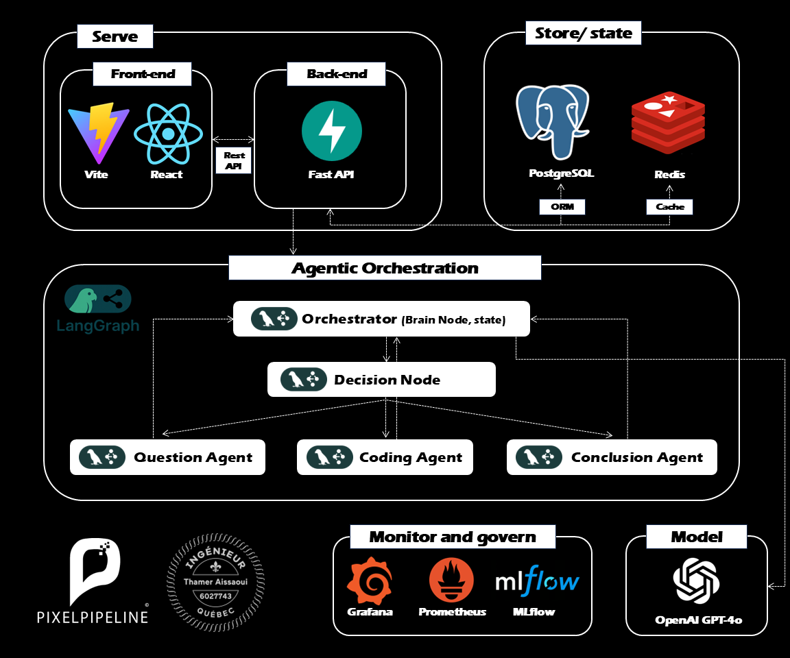

Agentic AI HR Interviewer
Building an Autonomous Recruiting Ecosystem with LangGraph

The Architecture: Autonomous Recruiting Intelligence
This project introduces a next-generation AI interviewer designed to handle end-to-end technical screenings. By moving beyond simple chatbots to an agentic, multi-node architecture, we enable deep reasoning and dynamic follow-up capabilities that simulate a human-level interviewing experience.
Video Demonstration
Intelligent Serving Layer
The system is accessed through a high-performance modern web stack. A Vite + React frontend provides a responsive, low-latency interface for candidates, while a robust FastAPI backend manages real-time communication and orchestrates complex logical flows through secure REST endpoints.
Durable State & Caching
Maintaining the context of a 60-minute interview requires sophisticated state management. We utilize PostgreSQL with a mature ORM for persistent candidate data and session history, paired with Redis for ultra-fast response caching and transient state coordination during the live session.
Agentic Orchestration with LangGraph
At the core lies our LangGraph-based Brain Node. This orchestrator manages a sophisticated multi-agent team: a Question Agent for behavioral probing, a Coding Agent for technical verification, and a Conclusion Agent for final evaluation. The Decision Node dynamically routes the conversation flow based on candidate performance and session state.
Generative Intelligence Model
The entire cognitive process is fueled by OpenAI's GPT-4o. This industry-leading model enables the agents to understand subtle nuances in candidate answers, provide helpful hints during coding challenges, and maintain a professional, empathetic tone throughout the interview.
MLOps Monitoring & Governance
This is a production-ready ecosystem. We implement a full observability stack featuring Prometheus and Grafana for system telemetry, while MLflow tracks model metrics, prompt performance, and agent decision-making logic to ensure continuous improvement and ethical neutrality.